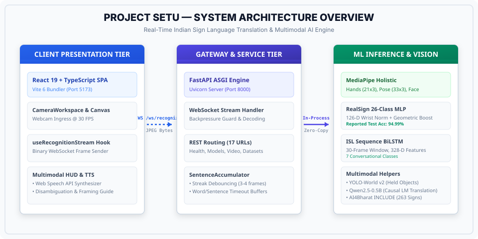

Project SETU: Master Documentation
Welcome to the authoritative technical documentation for SETU (Bridge) — an enterprise-grade Indian Sign Language (ISL) bidirectional translation platform combining spatial landmark normalization, PyTorch deep neural networks, open-vocabulary object grounding, and causal neural language modeling.
System Architecture Diagram

Explore the 5 Master Documents
Explore the problem domain of Indian Sign Language (ISL), why ISL requires bimanual (two-handed) tracking unlike ASL, intended user communities, technology stack, and verified project scope.
Inspect all 17 distinct URL paths, route handlers, low-latency binary WebSocket streaming protocol, backpressure handling, JSON request/response schemas, and ASGI lifecycle management.
Deep dive into RealSign MLP (94.99% checkpoint-reported test accuracy, 26,202 parameters), the 158-D vs 164-D vs 328-D feature schemas, AI4Bharat 134-D LSTM, YOLO-World v2, and Qwen2.5-0.5B causal language model.
Trace the live pipeline step-by-step: webcam canvas capture → MediaPipe skeletal tracking → wrist coordinate normalization → neural inference → streak debouncing → translation → speech output.
Complete annotated file-by-file inventory of every source file, developer startup instructions, Google Colab cloud training instructions, and 25+ comprehensive exam/viva defense questions with expert answers.
Key Technical Innovations in SETU
Unlike American Sign Language which relies heavily on single-hand fingerspelling, ISL letters (such as B, D, P, Q, T) require coordinate interactions across both hands. SETU models 126-D dual-hand skeletal geometry natively.
Full mathematical scale, translation, and 3D rotation invariance. Hand landmarks are shifted to the wrist origin and rotated in-plane and out-of-plane to eliminate webcam perspective distortions.
YOLO-World v2 open-vocabulary physical object detection runs in asynchronous background workers, enabling Show-and-Sign interactions without dropping the 30 FPS sign language pipeline.
Quick Start Commands
# 1. Run full automated test suite (164 tests)
.venv\Scripts\python.exe -m pytest tests/ -q
# 2. Launch SETU Backend (FastAPI on Port 8000) & Frontend (Vite on Port 5173)
.\scripts\run_fe_be.bat